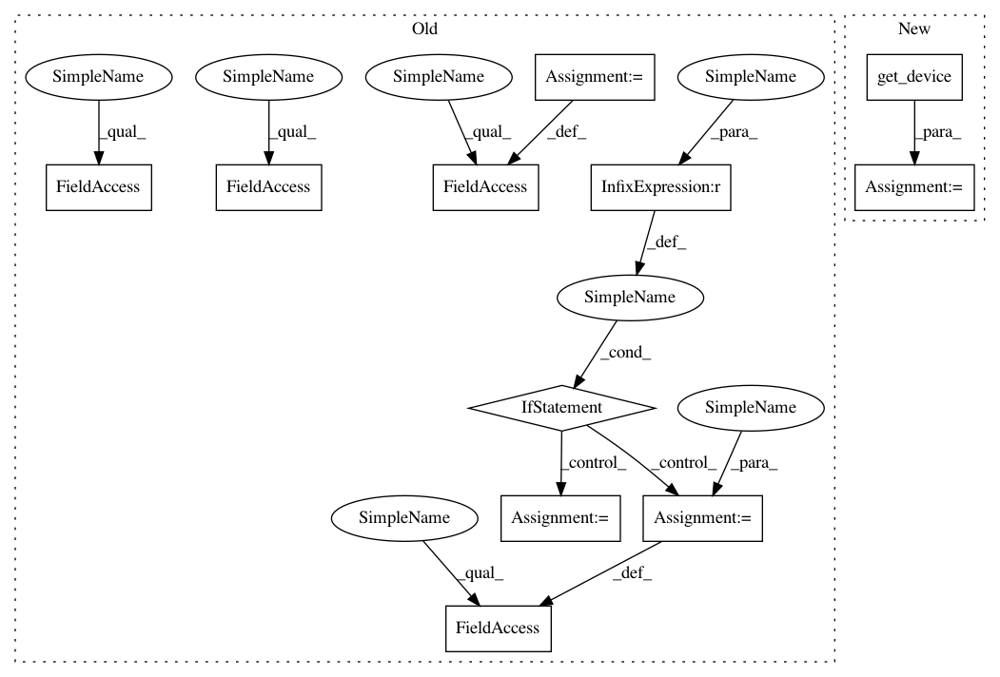

a04525112543a5dbf77401cde45442932aeec368,foolbox/ext/native/models/tensorflow.py,TensorFlowModel,__init__,#TensorFlowModel#Any#Any#Any#Any#,6
Before Change
import tensorflow as tf
assert tf.executing_eagerly()
self._bounds = bounds
if device is None:
self.device = tf.device(
"/GPU:0" if tf.test.is_gpu_available() else "/CPU:0"
)
elif isinstance(device, str):
self.device = tf.device(device)
else:
self.device = device
self._model = model
self._init_preprocessing(preprocessing)
def _init_preprocessing(self, preprocessing):
After Change
import tensorflow as tf
assert tf.executing_eagerly()
device = get_device(device)
with device:
dummy = ep.tensorflow.zeros(0)
super().__init__(model, bounds, dummy, preprocessing=preprocessing)
In pattern: SUPERPATTERN
Frequency: 3
Non-data size: 11
Instances
Project Name: bethgelab/foolbox
Commit Name: a04525112543a5dbf77401cde45442932aeec368
Time: 2020-01-26
Author: git@jonasrauber.de
File Name: foolbox/ext/native/models/tensorflow.py
Class Name: TensorFlowModel
Method Name: __init__
Project Name: bethgelab/foolbox
Commit Name: a04525112543a5dbf77401cde45442932aeec368
Time: 2020-01-26
Author: git@jonasrauber.de
File Name: foolbox/ext/native/models/tensorflow.py
Class Name: TensorFlowModel
Method Name: __init__
Project Name: jhfjhfj1/autokeras
Commit Name: 968ed8b75cc183e66777ca9d75ea765eede7a57c
Time: 2018-12-02
Author: lin.yang@tamu.edu
File Name: autokeras/nn/model_trainer.py
Class Name: GANModelTrainer
Method Name: __init__